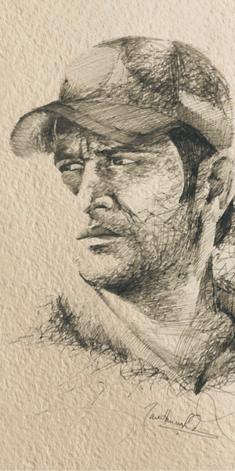
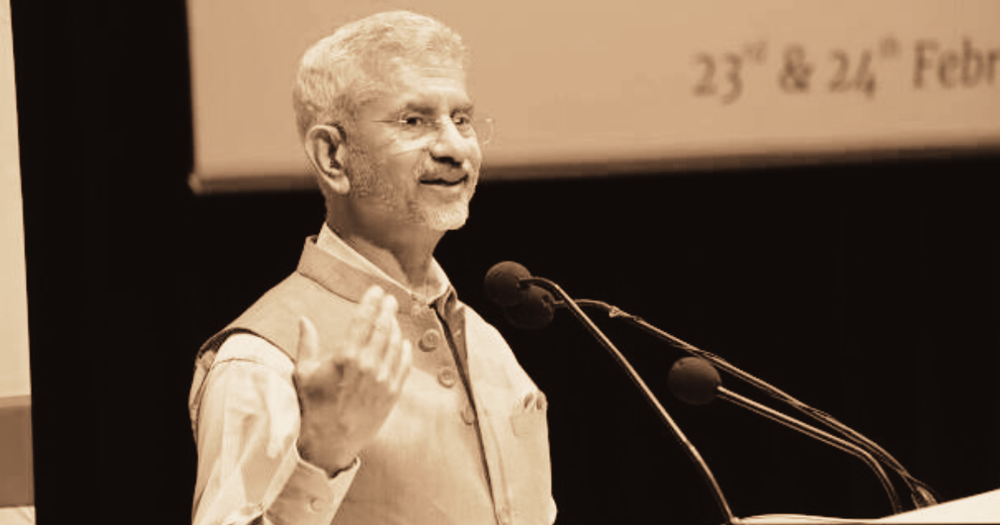

_ |
_ |
|| News word wide Since 1882 || |
|| 05 JUne 2023 || |
|| Monday Afternoon || |
|| XXXVI || |
_ |
Home |
Sports News |
Tranding News |
Politics |
World News |
Hello Abhisek! |
Log Out |
"He's Pretty Much Worshipped": Chennai Super Kings Star On MS Dhoni's 'Incredible' Stardom
Chennai Super Kings and New Zealand cricketer Devon Conway opened
up about the superstardom of MS Dhoni and how he was left stunned
by the support that the former Indian cricket team skipper enjoys
during the Indian Premier League (IPL) 2023. Dhoni enjoyed a
massive amount of support at every venue during the
recently-concluded tournament and he returned the favour by
leading his side to a record-equalling fifth title. In a recent
interaction, Conway spoke about his experiences of playing under
Dhoni and the relationship that the team and players share with
the CSK captain. “He (Dhoni) is very well-liked in India, he's
pretty much worshipped there,” Conway said on SENZ Mornings.
|
 |
||
Fynd was founded by IIT Bombay alumni Farooq Adam, Harsh Shah, and Sreeraman MG in 2013, and focused on bringing the inventory held by branded offline stores online through an O20 model. Fynd now has tie-ups with 8,000 stores across the country, whose products it sells on its online site. The company holds no inventory and has no warehouses, and tying up with stores directly lets it offer shorter delivery times. Fynd also has an in-store product called Fynd Store that helps brand stores save their in-store sales that could’ve been lost due to unavailability of the product. “Fynd has built an impressive, tech-first platform that has tremendous potential to scale within and beyond fashion and India,” said Google India’s Head of Corporate Development Seema Rao. Fynd claims to have unique proprietary inventory integrations that enable customers to discover fashion in real-time, and know the exact specifications of the products available. In India, Google has now shown an inclination towards backing startups that help bring together the offline and online worlds. In December, it had invested in Dunzo, a Bangalore-based startup that uses its delivery fleet to help people perform everyday tasks, such as picking up groceries, getting photocopies of documents, and even delivering flowers. Dunzo had taken off among Bangalore’s tech community, thanks mainly to the company’s online interface that connected its delivery fleet with its consumer base. |
|  | External Affairs Minister S Jaishankar said he tries not to “do politics abroad” while on international trips, in an apparent reference to Congress leader Rahul Gandhi’s remarks on foreign soil. Speaking in South Africa’s Cape Town, the minister was responding to a query on how he would react to “what some people who go to the US say”. “There are sometimes things bigger than politics. And when you step outside the country, I think that’s important to remember,” he said, without naming Rahul Gandhi. “So I may differ strongly with someone, but how I counter it, I would like to go back home and do it, and watch me when I get back.” “I am perfectly prepared to argue very vigorously at home, so you will never find me wanting in that regard. But even a democratic culture has a certain collective responsibility… There is a national interest, there is a collective image,” Jaishankar added. Since last year, the ruling Bharatiya Janata Party (BJP) has been attacking Rahul Gandhi’s speeches and interactions abroad which they claim are harmful to the country’s reputation. Most recently, the senior Congress leader’s remarks during his ongoing US tour drew the party’s ire, when he said that the Rashtriya Swayamsevak Sangh (RSS) and the BJP are controlling all instruments of politics in India. “There are sometimes things bigger than politics. And when you step outside the country, I think that’s important to remember,” he said, without naming Rahul Gandhi. “So I may differ strongly with someone, but how I counter it, I would like to go back home and do it, and watch me when I get back.” speeches and interactions abroad which they claim are harmful to the country’s reputation. Most recently, the senior Congress leader’s remarks during his ongoing US tour drew the party’s ire, when he said that the Rashtriya Swayamsevak Sangh (RSS) and the BJP are controlling all instruments of politics in India. |